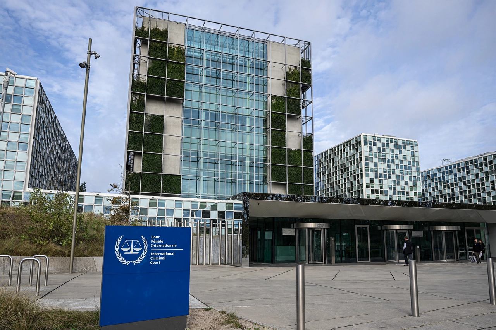

Complementarity is a principle of international criminal law under which an international court exercises jurisdiction only where national courts are unwilling or unable genuinely to investigate or prosecute a case. It is best known as the founding principle of the International Criminal Court (ICC).
The preamble and Article 17 of the Rome Statute (1998) provide that a case is inadmissible before the ICC where it is being investigated or prosecuted by a state with jurisdiction, unless that state is unwilling or unable genuinely to carry out the proceedings. Unwillingness may be shown where national proceedings are a sham designed to shield the accused; inability may arise from a collapse of the judicial system.
Complementarity differs from the primacy enjoyed by the earlier ad hoc tribunals for the former Yugoslavia and Rwanda, which could require national courts to defer to them. The ICC, by contrast, is designed as a court of last resort that complements — rather than replaces — national jurisdictions.
The term positive complementarity describes policies by which the ICC and states parties actively encourage and assist genuine national prosecutions, through capacity-building, information-sharing and burden-sharing.